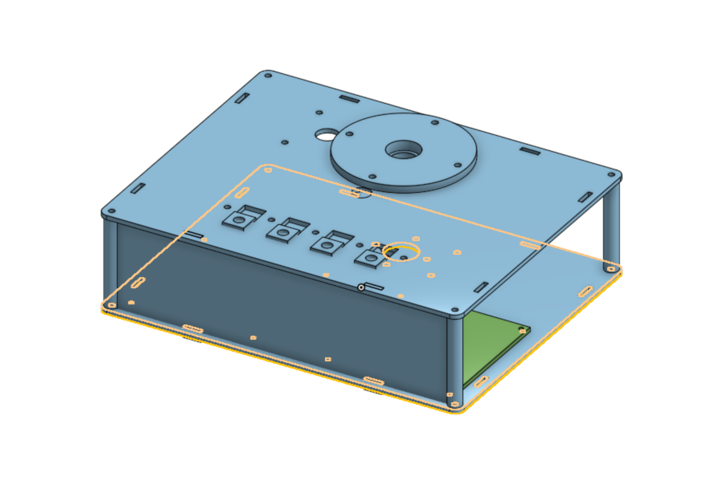
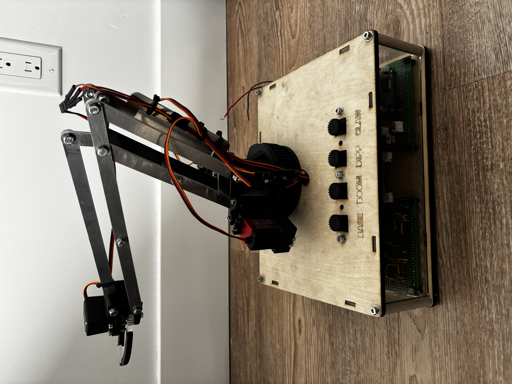
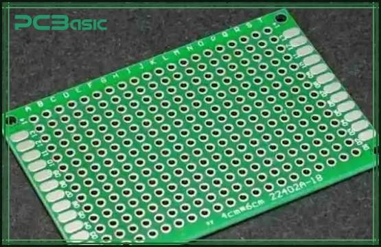

Mechanical Arm
Overview
After I had completed the Autonomous Robot project, I wanted to get a chance to work on the electrical and software oriented portions of the project. I reacreated the arm portion of the robot, and made it controllable both with a set of dials, as well as wirelessly via a wifi controller.


Software
The firmmware for the arm was written in C++ using PlatformIO, and ran on an ESP32 microcontroller (code available on my GitHub). I implemented a pre-designed H-bridge circuit to control the DC motor to rotate the base, and incorporated a potentiometer to read the positioning of the base to allow for a PID controller. The entire arm is powered by a 12V DC source, and has an internal power distribution board to step down the voltage to 5V for the ESP, while still allowing the H-bridge to receive the full 12V. The boom and the dipper of the arm are both controlled by servo motors, which are powered via the 12V source. In order to minimize noise, I kept the 5V servo and the 5V ESP on separate power rails. The input control of the arm is done via the set of potentiometers on the top, or via a wifi controller.
Key Takeaways
This project gave me a great opportunity to take all of the technical knowledge that I learned from the Autonomous Robot Project, and to implement it by myself to verify my understanding. It also gave me a chance to learn how to solder, and have to work with protoboards.
